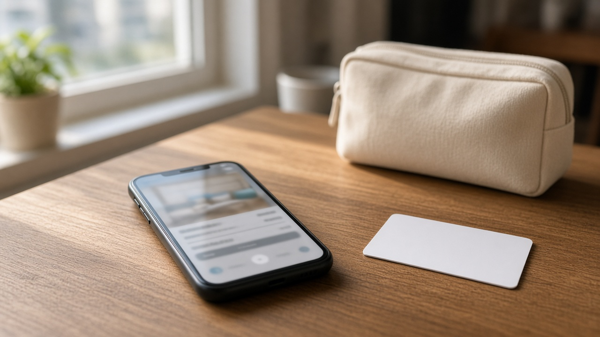
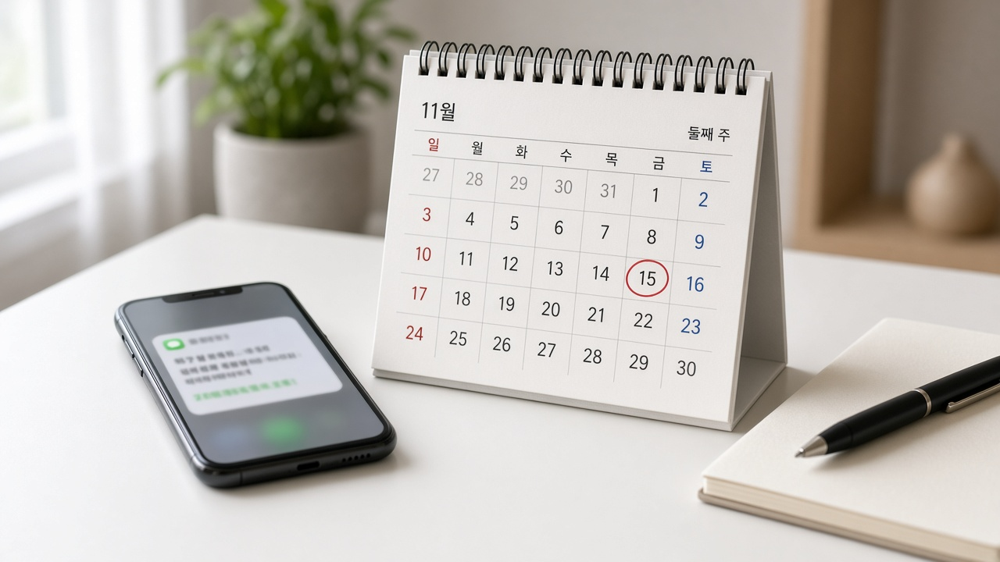

11월 12일부터 숙박 플랫폼은 영업신고증 없는 숙소를 중개할 수 없어요, 예약 전에 확인할 점

연휴나 출장 전에 앱으로 숙소를 고르다 보면 사진과 후기만 보고 결제하는 경우가 많아요.
그런데 11월 8일 기준으로 보면 며칠 뒤인 11월 12일부터는 온라인에서 숙박을 중개하는 플랫폼이 영업신고증을 확인하지 못한 숙소를 더 이상 중개할 수 없게 돼요.
이미 등록돼 있던 상품도 시행일 이후에도 계속 팔려면 적법성을 다시 확인해야 한다고 안내돼 있어요.
무엇이 바뀌고, 예약할 때 무엇을 보면 좋은지 순서대로 정리해 볼게요.
11월 12일부터 플랫폼이 영업신고증을 확인해야 해요
법제처가 11월 2일 소개한 11월 시행법령에 따르면 공중위생관리법 개정으로 11월 12일부터 온라인 플랫폼 등 통신판매중개자가 숙박업자의 의뢰를 받아 중개할 때 해당 업소의 영업신고증을 반드시 확인해야 해요.
영업신고증을 확인할 수 없으면 통신판매를 중개해서는 안 되고, 미신고 영업을 확인한 경우에는 해당 게시물을 즉시 삭제해야 해요.
이를 위반하면 1천만 원 이하의 과태료가 부과된다고 법제처는 안내했어요.
보건복지부가 공포한 시행령에서는 통신판매중개자 등이 영업신고증을 확인할 수 없는 숙박상품을 중개한 경우 과태료 500만 원 기준을 두고 11월 12일부터 시행한다고 밝혔어요.
법률상 상한과 시행령상 부과 기준이 함께 있으니, 금액은 실제 처분 단계에서 법령과 안내를 함께 확인하는 편이 안전해요.
이미 올라와 있던 숙소도 다시 확인 대상이에요
보건복지부 안내를 보면 적용 대상에는 온라인여행사와 그 밖의 숙박상품 중개 플랫폼이 포함돼요.
이미 등록된 상품도 시행일 이후 중개하려면 적법성을 재확인해야 한다고 적혀 있어요.
시설 유형에 따라 확인 서류가 달라질 수 있어요.
일반 숙박업은 영업신고증, 농어촌민박은 신고확인증, 외국인관광 도시민박업이나 한옥체험업은 관광사업 등록증처럼 유형별 증빙을 확인하는 방식으로 안내되고 있어요.
플랫폼마다 서류 제출과 공공데이터 대조 일정은 다를 수 있으므로, 내가 자주 쓰는 앱의 공지나 숙소 상세의 등록 정보를 한 번 더 보는 편이 좋아요.
예약 전에 손님이 보면 좋은 확인 포인트
첫째, 예약하려는 숙소 상세 화면에서 상호나 사업자 관련 안내, 영업신고나 등록 관련 표기가 있는지 확인하세요.
둘째, 시행일 전후에 예약 확정 메일이나 앱 알림에서 판매 중단, 대체 숙소, 환불 안내가 왔는지 살펴보세요.
셋째, 이미 결제한 예약이 있는데 숙소 판매가 중단됐다는 안내를 받으면, 플랫폼 고객센터에 예약 유지 여부와 환불 또는 대체 숙소 기준을 물어보세요.
넷째, 민박이나 게스트하우스처럼 유형이 다른 숙소는 일반 호텔과 확인 서류가 다를 수 있으니, 화면의 숙소 유형과 등록 정보를 같이 보세요.
다섯째, 시행 직후에는 일부 상품이 잠시 내려가거나 다시 올라올 수 있으니, 출발 전날에도 예약 상태를 한 번 더 확인하는 편이 좋아요.

기존 예약이 있으면 플랫폼 안내를 따로 보세요
제도의 핵심은 플랫폼의 확인 의무와 미확인 상품의 중개 제한이에요.
다만 시행 전에 예약한 뒤 시행 후에 투숙하는 경우에 대해 예약 유지, 환불, 대체 숙소 제공을 일률적으로 정해 둔 공통 기준이 모든 보도에 동일하게 적혀 있지는 않아요.
그래서 이미 예약을 끝낸 분은 정부 발표만으로 내 예약이 자동으로 유지되거나 취소된다고 단정하기보다, 해당 플랫폼의 공지와 예약 상세, 고객센터 안내를 기준으로 확인하는 편이 맞아요.
새로 예약하는 분은 결제 전에 숙소 정보가 정상적으로 노출되는지와 예약 확정 문자가 오는지까지 확인하세요.
지금 바로 정리해 두면 좋은 순서
첫째, 달력에 11월 12일 숙박 플랫폼 영업신고증 확인 의무 시행일을 적어 두세요.
둘째, 앞으로 며칠 안에 출발하는 예약이 있으면 앱 공지와 예약 상태를 먼저 확인하세요.
셋째, 새로 예약할 때는 숙소 상세의 등록 정보와 결제 후 확정 안내를 같은 자리에서 보세요.
넷째, 판매 중단이나 대체 안내가 오면 환불 일정과 대체 숙소 조건을 메모해 두세요.
다섯째, 숙소 유형이 호텔인지 민박인지에 따라 확인 서류 이름이 다를 수 있으니 유형을 함께 적어 두세요.
오늘 글은 일반 정보 정리이며 특정 숙박 앱이나 숙소를 권유하지 않아요. 정확한 적용 대상과 내 예약의 처리 기준은 보건복지부와 법제처 안내, 그리고 실제 이용하는 플랫폼의 최신 공지를 기준으로 확인해 주세요.
참고 자료 법제처 2026년 11월 2일 11월 주요 시행법령 소개 보도자료, 보건복지부 공중위생관리법 시행령 일부개정 관련 KDI 경제정책자료, 국가법령정보센터 공중위생관리법 제4조의2 통신판매중개의 제한, 대한민국 정책브리핑 2026년 11월 2일 정책뉴스
태그 숙박플랫폼 영업신고증 미신고숙박 공중위생관리법 과태료 온라인여행사 예약확인 보건복지부 법제처 숙박중개